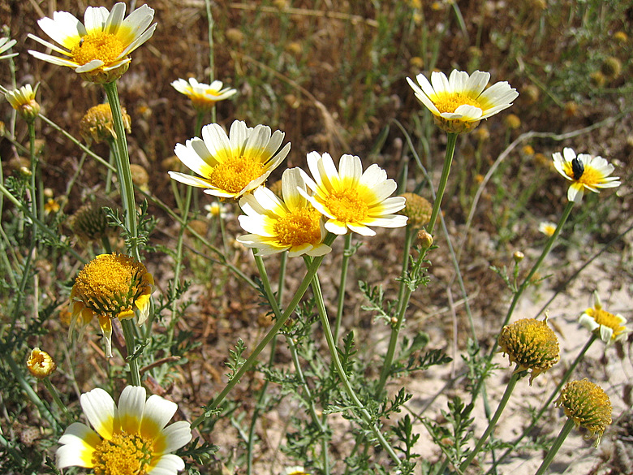
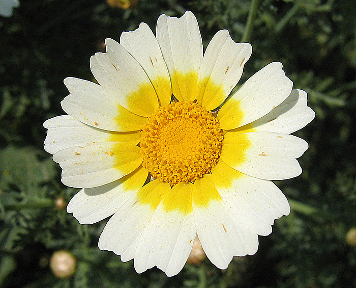
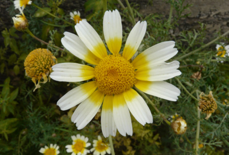
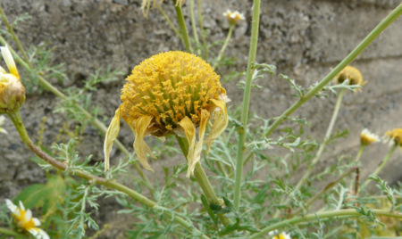
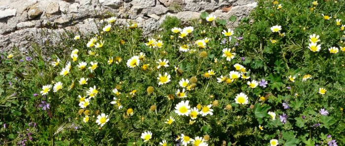

")
| PHRYGANA | Fauna | Flora |
additions nouveautés |
espèces species |
contact -
info - commentaires phrygana1 (at) gmail.com |
| Particularités crétoises | Galles et mines |
| Glebionis coronaria (L.) CASS. ex SPACH var. discolor (d'URV.) TURLAND |
| 46 | Flora | ASTERACEAE | Anthemideae | Glebionis CASS. |
 Glebionis coronaria var. discolor Agia Galini 05 juin 2005 |
| Synonymes: Chrysanthemum coronarium var. discolor d'URV. | |
|
fr:
le Chrysanthème couronné en: Crown Daisy
gr:
η Μαντηλίδα |
|
| Feuilles: semi-embrassantes, pennatifides (2 fois lobées) à lobes lancéolés et pointus. Les tiges sont ramifiées. | |
| Fleurs: les fleurs tubulées sont jaune orangé tandis que les ligulées sont jaunes et blanches. Les capitules sont assez grands (diamètre de 30 à 60 mm) et solitaires, portés par des pédoncules longs et rainurés. | |
| Fruits: des akènes trigones ailés. | |
| Hauteur: 30 - 80 (- 100) cm | Type biologique: thérophyte ramifié |
| Floraison: mars avril mai | |
| Altitudes: 0 - 550 m | |
| Statut en Crète: indigène -- native | |
| Biotopes en Crète: sur sols riches, terrains vagues, bords de route, sables maritimes, sols cultivés. | |
| Distribution: région Méditerranéenne | |
| Usage en Crète: les jeunes pousses sont consommées crues en salades ou cuites à la vapeur en petites quantités | |
| Plante-hôte pour: | ||
|
|
||
| Eupithecia centaureata | ||
|
 Glebionis coronaria var. discolor Agia Galini 05 juin 2005 |
|

 Glebionis coronaria var. discolor Klima 24 mars 2010 |
|
 Glebionis coronaria var. discolor Rethymno forteresse 30 mars 2010 |
| 01 janvier 2012 |
| © paul fontaine -- © Phrygana.eu 2007 -- 2013 |